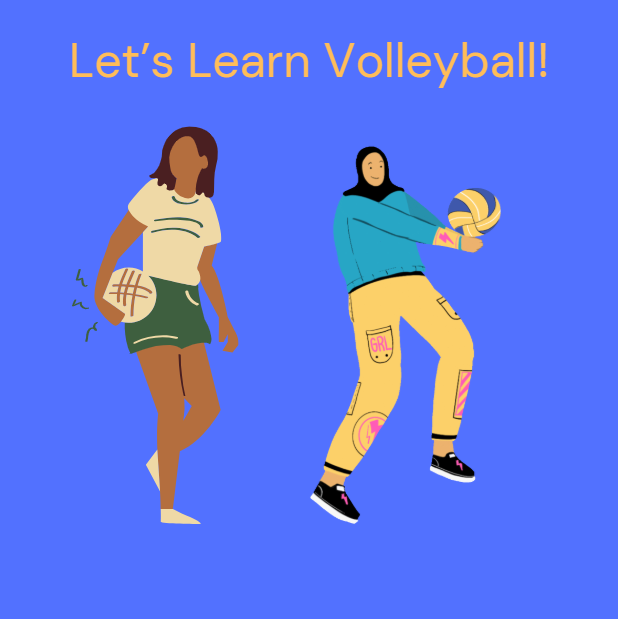
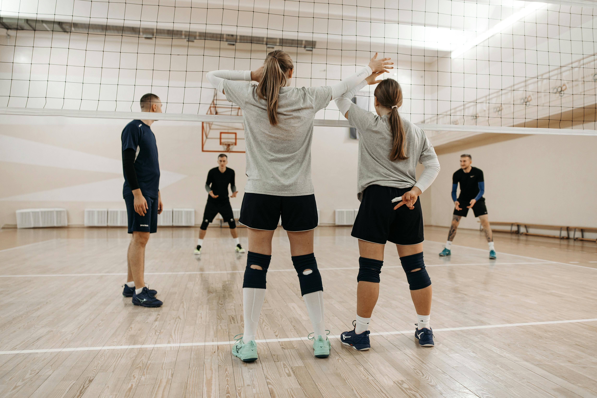
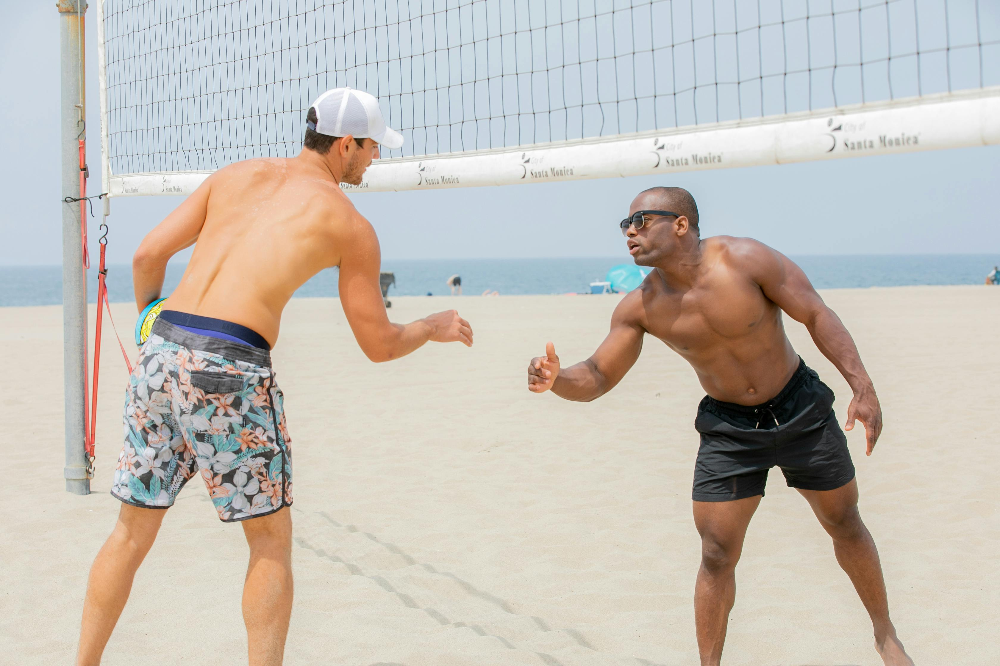
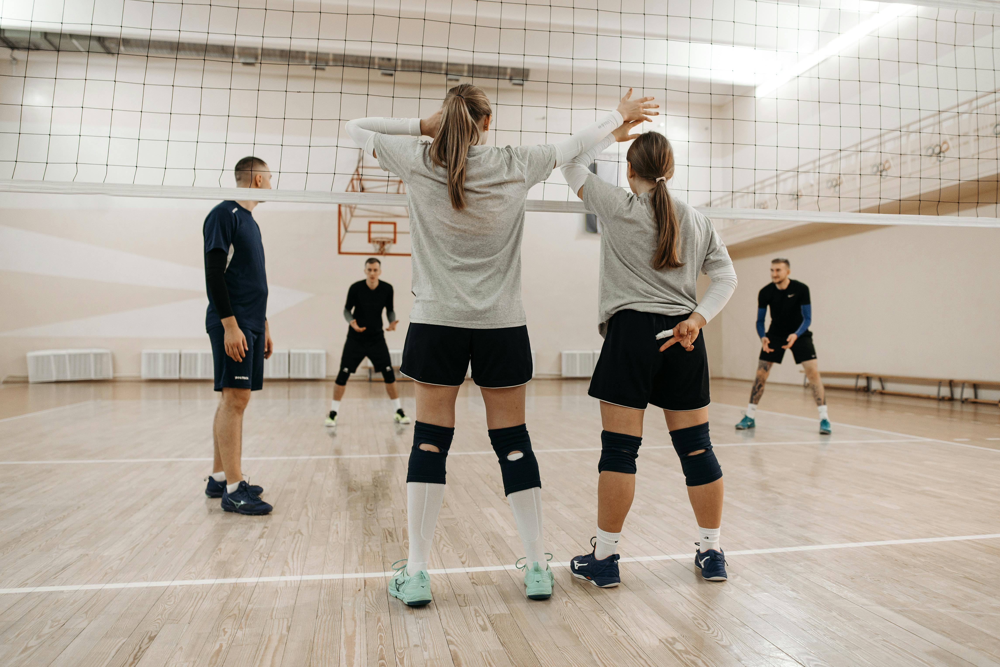
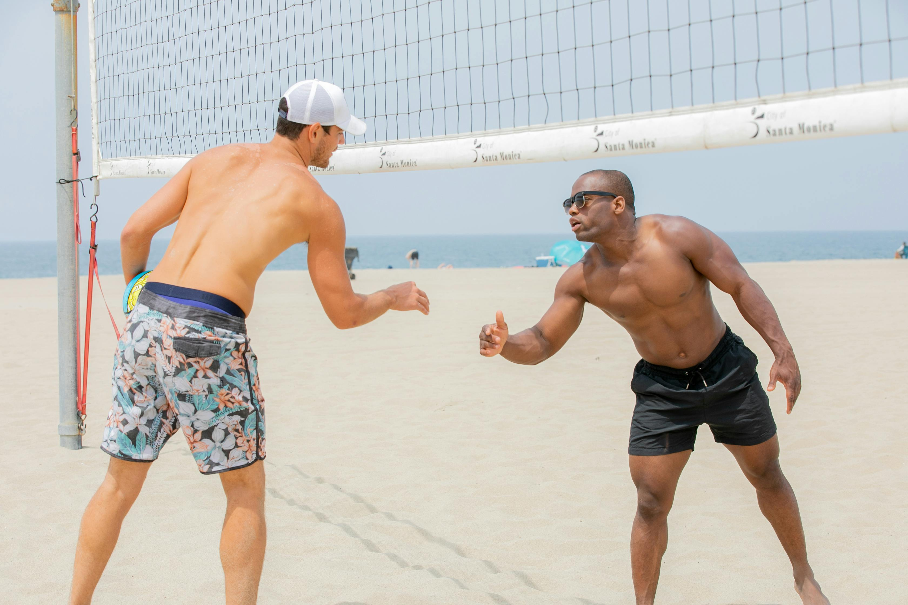

Overview
Purpose
The purpose is to make a site that gives an easy understanding to new players about how the game works through positions and strategies.
Audience
[My audience is new players whether they be old or young.
Branding
Website Logo
Style Guide
Color Palette
| Primary | Secondary | Accent 1 | Accent 2 |
|---|---|---|---|
Typography
Heading Font: Georgia
Paragraph Font: Garamond
Normal paragraph example
The best Whitewater Rafting in Colorado, White Water Rafting Company offers rafting on the Colorado and Roaring Fork Rivers in Glenwood Springs. Since 1974, we have been family owned and operated, rafting the Shoshone section of Glenwood Canyon and beyond.
Colored paragraph example
Trips vary from mild and great for families, to trips exclusively for physically fit and experienced rafters. No matter what type of river adventures you are seeking, White Water Rafting Company can make it happen for you.
Navigation with Hover
Site Map
Wireframes
Home

[Page 2]
ABOUT US Hey all! My name is Aubrey, and this website is to help people to understand how to play volleyball. When I first started volleyball, I had a sister who was willing to teach me how to play, but when I got into high school, I learned my skills weren’t set in the right way. My website will have notes and set ways that give more control and understanding. WHAT ARE THE PURPOSES FOR THESE? Each section follows your path into developing into a better player. Beginner focuses on making sure you are able to pass and set and developing skills for intermediate skills such as diving, hitting, and more. These paths only lead you into developing into a middle to high school player, but it will give you a good basis that you could pursue later. WHAT DOES EACH SECTION GIVE US Each sections will provide you with details on its purpose and plan for your growth. As you begin to feel comfortable with one section, you can move to the next section and start developing new skills through new training or applying the training. BEGINNER Welcome to the beginner page. This section will help you understand basic skills, figure out positions, and prepare for later sections through training. The fundamentals are crucial in beginning to have a good structure in playing volleyball. INTERMEDIATE Welcome to the intermediate page. This page is set to help you start to get the basics of hitting and strategies on where you place the ball for you teammates or attacking. During volleyball, there are opportunities to let yourself bring out your creative mind and see the optimal way when playing. ADVANCED Welcome to the advanced page. This page will focus more on the more difficult rotations, dives, serves, etc. At this point, most of this will be thought FREQUENTLY ASKED QUESTIONS How do volleyball points work in games? In a volleyball match, you play up to 25 points. Once someone reaches 25, or any point past that where you are two points ahead of the other team, you win a set. Most games go to a best of 3 or a best of 5 sets. If the game gets to the last set (3 or 5) the points in a set will move to 15. What are the basic rules in volleyball? Volleyball is a game where you keep a ball in the air until it falls onto the ground. Depending on where it lands, it will be one of the team’s points. You keep playing until one team gets enough points to end the game. Are there different kinds of volleyball? Yes, There is indoor volleyball, which consists of 6 players on one side of the court at a time, and the other is beach volleyball, which consists of 2 players per side with a couple of changed rules. Some of the changed rules focus on open hand tipping and over hand receiving. Most of this website will be about normal volleyball or basic skills that could be used in both areas. What positions are there in volleyball? There are 7 positions in volleyball. Each position focuses on each player’s strengths in the way they play Libero: Libero is a defensive position in the back row of the court. They wear different colored jerseys and are able to switch with the players who are in the same positions (usually seen in the middles). They are usually best at reading hitters and reacting to the ball. DS: Defensive specialist are players that play defense usually alongside the libero. Unlike the libero, they can only switch with one player (like all the other players). Setter: Setters are players who control the ball during the second touch. They set the ball to hitters or tip the ball. Setters tend to have a great sense of the court and a great sense of mentality. Outside: Outside hitters tend to be the most all-around players in offense and defense. They hit on the left side and are usually used in back row defense to prevent the setter from receiving the serve. Middle: The middle is known as a powerful hitter and great blocker. They tend to be really good with timing and reading the hitter on the opposite side when blocking. Opposite: The opposite is the right side hitter. They tend to be a good blocker and reliable in being able to adjust for the setter. Serving Specialist: Serving specialists are players that are known for their serves and swap in with the player about to serve. Once the other team gets the point, they are swapped back out with the original player
Photos
 


